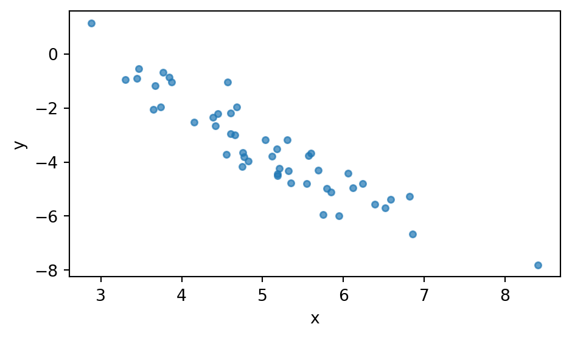
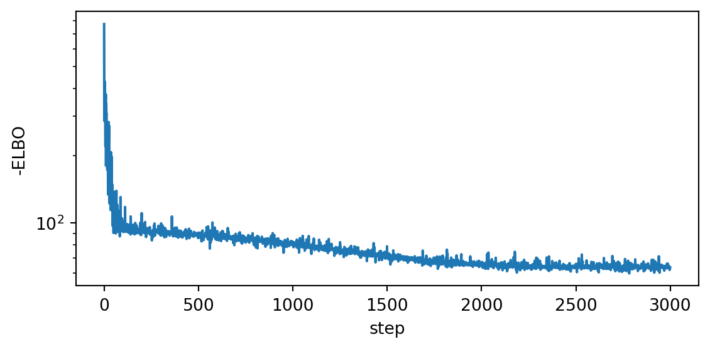
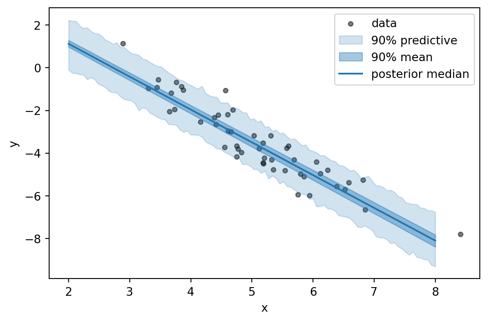
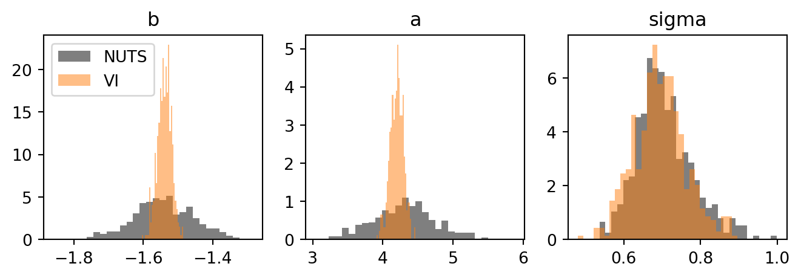
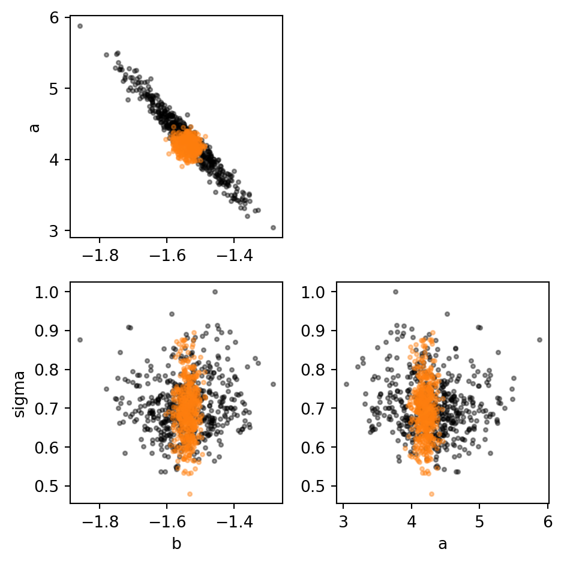
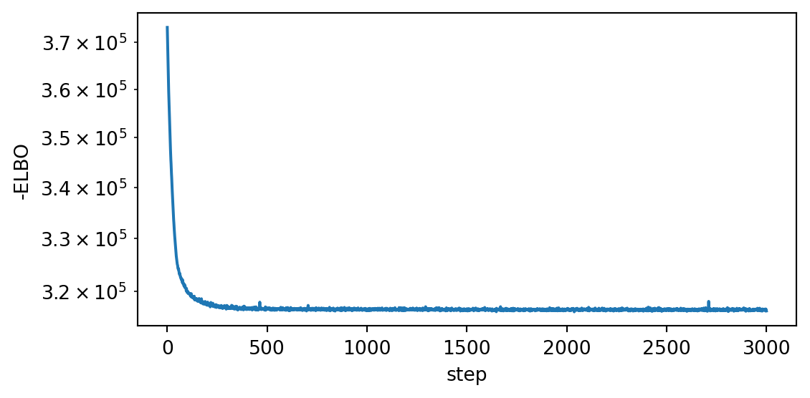
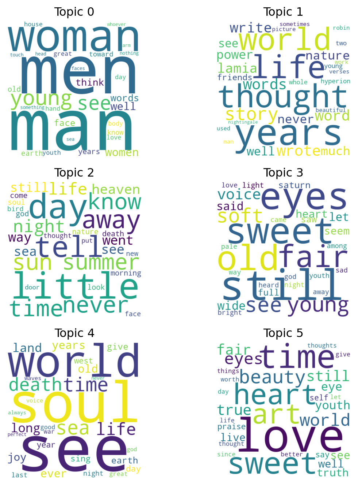

import torch
import matplotlib.pyplot as plt
import pyro
import pyro.distributions as dist
from pyro.infer import SVI, Trace_ELBO, Predictive
from pyro.infer.autoguide import AutoNormal
from pyro.optim import Adam
pyro.set_rng_seed(0)9 Variational inference
\[ \def\then{\mathbin{;}} \def\kernel{\rightsquigarrow} \def\swap{\mathsf{swap}} \def\id{\mathsf{id}} \def\cp{\mathsf{copy}} \def\del{\mathsf{del}} \def\ivmark#1{[\![#1]\!]} \]
MCMC approximates a posterior by sampling: build a chain whose long-run distribution is the target, run it long enough, and treat its trajectory as a sample. Variational inference (VI) takes a different route. Instead of sampling, it turns inference into an optimization problem: pick a tractable family of distributions and find the member of that family that is closest to the posterior. The result is not a cloud of samples but an explicit, parameterized distribution that we can sample from, evaluate, and differentiate cheaply.
First, we develop VI from scratch: we define what “closest to the posterior” means via the Kullback–Leibler divergence, derive the Evidence Lower Bound (ELBO) that we actually optimize, and explain the reparameterization trick that makes stochastic gradients possible. Second, we meet Pyro, the PyTorch-based probabilistic programming framework we will use, and fit a small Bayesian linear regression with stochastic variational inference (SVI). Third, we scale up to Latent Dirichlet Allocation on a corpus of classic English-language poetry.
9.1 Inference as optimization
9.1.1 The posterior we want
Consider a generative model with latent variables \(z\) and observed data \(x\), specified by a joint density \(p(x, z)\). Given an observation \(\bar x\), Bayesian inference is the calculation of the posterior \[ p(z \mid \bar x) \;=\; \frac{p(\bar x, z)}{p(\bar x)}, \qquad p(\bar x) \;=\; \int p(\bar x, z)\,\mathrm{d}z. \] The joint \(p(\bar x, z)\) is usually easy to compute since it is specified by the model. The evidence \(p(\bar x)\), however, is an integral over the entire latent space. For all but the simplest models it has no closed form and is too expensive to evaluate numerically. So we generally know \(p(z \mid \bar x)\) up to some intractable normalizing constant.
9.1.2 A different idea: approximate, don’t sample
Sampling methods like MCMC sidestep the intractable \(p(\bar x)\) by drawing samples proportional to \(p(\bar x, z)\). Variational inference sidesteps it by approximating \(p(z \mid \bar x)\) by a known, tractable distribution. To do this, we pick a tractable parametric family of densities
\[ \mathcal{Q} \;=\; \{\, q_\phi(z) : \phi \in \Phi \,\}, \]
called the variational family or guide. We then search inside \(\mathcal{Q}\) for the member closest to the posterior. Hence, inference becomes optimization over \(\phi\). The shape of \(q_\phi\) trades expressiveness (how well it can match the true posterior) against tractability (how cheaply we can optimize over it).
Compared to MCMC, VI is typically faster and scales better to large datasets and high-dimensional latents. However, it returns an approximation whose quality is bounded by the chosen family \(\mathcal{Q}\).
9.1.3 KL divergence
To make “closest” precise we need a discrepancy between two densities. In VI, we measure discrepancy with the Kullback–Leibler divergence. For two densities \(q\) and \(p\) on the same space, \[ \mathrm{KL}(q \,\|\, p) \;:=\; \int \log \frac{q(z)}{p(z)}\, q(z) \,\mathrm{d}z \;=\; \mathbb{E}_{q(z)}\!\left[\log \frac{q(z)}{p(z)}\right]. \]
KL is non-negative, equals zero iff \(q = p\), but is not symmetric.
VI minimizes the reverse KL, with \(q\) in the first slot: \[ q^\star_\phi \;=\; \arg\min_{\phi}\; \mathrm{KL}\!\big(\,q_\phi(z)\,\big\|\,p(z \mid x)\,\big). \]
The reason is purely practical: this expectation is under \(q_\phi\), which we chose precisely because we can sample from it. The forward KL \(\mathrm{KL}(p(\cdot \mid x)\,\|\,q_\phi)\) would require expectations under the very posterior we are trying to compute.
9.1.4 The ELBO
If we expand the reverse KL using \(p(z \mid \bar x) = p(\bar x, z) / p(\bar x)\), the intractable evidence appears as a constant additive term: \[ \begin{aligned} \mathrm{KL}(q_\phi \,\|\, p(\cdot \mid \bar x)) &\;=\; \mathbb{E}_{q_\phi(z)}\!\left[\log \frac{q_\phi(z)}{p(z \mid \bar x)}\right] \\ &\;=\; \mathbb{E}_{q_\phi(z)}\!\left[\log q_\phi(z) - \log p(z \mid \bar x)\right] \\ &\;=\; \mathbb{E}_{q_\phi(z)}\!\left[\log q_\phi(z) - \log p(\bar x, z) + \log p(\bar x)\right] \\ &\;=\; \mathbb{E}_{q_\phi(z)}\!\left[\log q_\phi(z) - \log p(\bar x, z)\right] \;+\; \log p(\bar x), \end{aligned} \] where in the last step we pulled \(\log p(\bar x)\) out of the expectation because it does not depend on \(z\).
Since \(\log p(\bar x)\) does not depend on \(\phi\), minimizing the KL is equivalent to minimizing the first term. Traditionally, the negative of this term is called the Evidence Lower Bound (ELBO): \[ \mathrm{ELBO}(\phi) \;:=\; \mathbb{E}_{q_\phi(z)}\!\left[\log p(\bar x, z) - \log q_\phi(z)\right]. \]
Hence, to minimize the KL is to maximize the ELBO.
9.1.5 Maximizing the ELBO
Inspecting the ELBO, both quantities inside the expectation are things we can evaluate: \(\log p(\bar x, z)\) is the model’s joint log-density, and \(\log q_\phi(z)\) is the guide’s log-density. The expectation itself is under \(q_\phi\), which we can sample from.
Thus, we can use the LLN to estimate the ELBO with Monte Carlo: \[ \widehat{\mathrm{ELBO}}(\phi) \;=\; \frac{1}{S}\sum_{s=1}^{S}\!\left[\log p(\bar x, z^{(s)}) - \log q_\phi(z^{(s)})\right], \qquad z^{(s)} \sim q_\phi, \]
To optimize, we need the gradient \(\nabla_\phi \mathrm{ELBO}(\phi)\). Again, we want to construct a Monte Carlo estimator for it. Trying to differentiate the ELBO directly runs into trouble. Concretely, if we write the ELBO as \[ \mathrm{ELBO}(\phi) \;=\; \int q_\phi(z)\,f_\phi(z)\,\mathrm{d}z, \qquad f_\phi(z) := \log p(\bar x, z) - \log q_\phi(z), \]
then differentiating under the integral and applying the product rule gives two terms, \[ \nabla_\phi \mathrm{ELBO}(\phi) \;=\; \int (\nabla_\phi q_\phi(z))\, f_\phi(z)\,\mathrm{d}z \;+\; \int q_\phi(z)\,\nabla_\phi f_\phi(z)\,\mathrm{d}z. \]
The first term is not an expectation under \(q_\phi\), so it cannot be estimated by simply averaging over samples from \(q_\phi\).
The reparameterization trick fixes this. The idea is to push the randomness out of \(q_\phi\) into a fixed, \(\phi\)-free noise distribution and obtain \(z\) as a deterministic function of this noise. Explicitly, suppose we can write
\[ z \;=\; g_\phi(\epsilon), \qquad \epsilon \sim p(\epsilon), \]
where \(p(\epsilon)\) does not depend on \(\phi\) and \(g_\phi\) is a differentiable, deterministic map such that \(z \sim q_\phi\). For example, if \(q_\phi = \mathcal{N}(\mu, \sigma^2)\) with \(\phi = (\mu, \sigma)\), we can take \(\epsilon \sim \mathcal{N}(0, 1)\) and \(g_\phi(\epsilon) = \mu + \sigma \epsilon\). Under this change of variables, we can write the ELBO as an expectation under \(p(\epsilon)\): \[ \mathrm{ELBO}(\phi) \;=\; \mathbb{E}_{p(\epsilon)}\!\left[\log p(\bar x,\, g_\phi(\epsilon)) - \log q_\phi(g_\phi(\epsilon))\right]. \]
Since \(\phi\) now appears only in the integrand, the gradient passes through the expectation (no product rule involved):
\[ \nabla_\phi \mathrm{ELBO}(\phi) \;=\; \mathbb{E}_{p(\epsilon)}\!\left[\nabla_\phi\!\left(\log p(\bar x,\, g_\phi(\epsilon)) - \log q_\phi(g_\phi(\epsilon))\right)\right]. \]
We can thus estimate the gradient using Monte Carlo by drawing \(\epsilon^{(1)},\dots,\epsilon^{(S)}\), computing \(z^{(s)} = g_\phi(\epsilon^{(s)})\), and averaging the per-sample gradients. The per-sample gradients can be computed by automatic differentiation.
Plugging this gradient estimator into any stochastic optimizer (Adam, SGD, …) gives stochastic variational inference (SVI): at each step, sample a small minibatch of \(\epsilon\)’s, compute a noisy gradient of the ELBO, and take a step in \(\phi\).
9.1.6 Typical variational families
In practice a small number of Gaussian-based families dominate, since they are cheap, easy to reparameterize, and easy to fit.
Mean-field Gaussian. Give each of the \(d\) latent coordinates its own independent Gaussian:
\[ z_i \;\sim\; \mathcal{N}(\,\cdot \mid \mu_i, \sigma_i), \qquad i = 1, \dots, d. \]
The number of variational parameters scales linearly in \(d\), and the log-density is a sum of one-dimensional terms. The price is that mean-field assumes the coordinates of \(z\) are independent under the posterior, which they almost never are (think slope and intercept in a regression). The best mean-field fit is an axis-aligned ellipsoid inside the true posterior’s tilted one: correctly centered but systematically too narrow. Credible intervals are over-confident, and any downstream quantity that depends on posterior correlations is biased.
Full-rank Gaussian. Replace independence with a full covariance,
\[ z \;\sim\; \mathcal{N}(\,\cdot \mid \mu, \Sigma), \]
parameterized e.g. by a Cholesky factor \(\Sigma = L L^\top\). This captures arbitrary linear correlations between latents, but costs \(O(d^2)\) parameters and work per gradient step. This is prohibitive once \(d\) is in the thousands.
Low-rank Gaussian. Compromise by writing \(\Sigma = D + W W^\top\) with \(W \in \mathbb{R}^{d \times r}\) and \(D\) diagonal. This captures the \(r\) leading directions of posterior correlation at cost \(O(d r)\) per step.
All three families are unimodal and Gaussian-shaped. Heavy-tailed, skewed, or multimodal posteriors are out of reach no matter how carefully we tune \(\phi\). For those, one reaches for richer families like normalizing flows.
9.2 Variational inference in Pyro
We have already met NumPyro in the chapter on MCMC. Pyro is its older sibling. It has the same modeling primitives, but is built on PyTorch rather than JAX. We use Pyro here because its support for variational inference is more mature than NumPyro’s, which is primarily focused on MCMC.
The user-facing workflow is very similar to MCMC in NumPyro, but with three new ingredients.
1. A guide alongside the model. In MCMC, the model is the only object we write: the algorithm samples directly from the (unnormalized) posterior it defines. In SVI we additionally need a guide, which is just a Python function defining the variational family \(q_\phi(z)\). The guide has the same signature and the same sample site names as the model. The free variational parameters \(\phi\) are declared with pyro.param, which adds them to a global parameter store that Pyro tracks and differentiates.
In practice we almost never write the guide by hand. Pyro’s autoguides build one mechanically from the model. The ones we will use:
AutoNormal— independent Gaussian per latent (mean-field). Our default.AutoMultivariateNormal— full-covariance Gaussian, captures correlations.AutoLowRankMultivariateNormal— middle ground, scales better in high dimensions.AutoNormalizingFlow,AutoIAFNormal— flexible non-Gaussian families.AutoDelta— point estimate (recovers MAP).
Each autoguide automatically transforms constrained variables into an unconstrained space. Hence, the Gaussian variational families above remain valid even when the model uses constrained distributions like HalfNormal or Dirichlet.
2. An optimizer and a loss. SVI is an optimization problem, so we pick a gradient-based optimizer (Adam is the default) and a stochastic estimate of the (negative) ELBO as the loss. The class pyro.infer.SVI bundles model, guide, optimizer, and loss together. We use Pyro’s Trace_ELBO, which constructs the gradient estimator described in the previous section by tracing the model and guide and applying the reparameterization trick automatically.
3. An explicit training loop. With NUTS we call mcmc.run(...) once and wait. With SVI we are in charge of the loop: each call to svi.step(...) draws a fresh batch of \(\epsilon\)’s, evaluates the ELBO and its gradient, and takes one optimizer step. We typically run thousands of steps and watch the (negative) ELBO go down to check convergence.
4. Model output The output of training is not a cloud of posterior samples but the fitted variational parameters \(\phi\) sitting in the parameter store. From those we obtain samples or summaries on demand using guide.quantiles(...), guide.median(), or the Predictive class (the same one we used in NumPyro).
9.3 Example: Bayesian linear regression
As a first example we fit a Bayesian linear regression with SVI and compare it against NUTS on the same model. In practice, SVI is not the best choice for a model this small, but it is a good way to illustrate the workflow and the quality of the approximation.
9.3.1 Simulated data
We generate \(N = 50\) points from \(y = b\,x + a + \sigma\,\varepsilon\) with a single feature and known true parameters. We deliberately place the \(x\)-values far from zero: this makes the intercept \(a\) strongly anti-correlated with the slope \(b\). This will allow us to show how the mean-field guide fails to capture this correlation. This problem can be fixed by reparameterizing the model.
N = 50
D = 1
true_b = torch.tensor([-1.5])
true_a = 4.0
true_sigma = 0.7
x = torch.randn(N, D) + 5.0 # x-values centred around 5, not 0
y = x @ true_b + true_a + true_sigma * torch.randn(N)Code
fig, ax = plt.subplots(figsize=(5, 3))
ax.scatter(x[:, 0], y, s=15, alpha=0.7)
ax.set_xlabel("x")
ax.set_ylabel("y")
plt.tight_layout()
plt.show()
9.3.2 Model
The model follows the (Num)Pyro syntax we are familiar with.
def model(x, y=None):
N, D = x.shape
# Priors
with pyro.plate("features", D):
b = pyro.sample("b", dist.Normal(0.0, 1.0))
a = pyro.sample("a", dist.Normal(0.0, 10.0))
sigma = pyro.sample("sigma", dist.HalfNormal(1.0))
# Likelihood
mean = x @ b + a
with pyro.plate("data", N):
return pyro.sample("y", dist.Normal(mean, sigma), obs=y)9.3.3 Guide and SVI setup
We build a mean-field guide for the model using AutoNormal(model). The HalfNormal prior on \(\sigma\) is handled automatically by transforming to the unconstrained space via \(\log \sigma\).
We bundle model, guide, optimizer, and loss into a single SVI object. pyro.clear_param_store() wipes any leftover variational parameters from previous runs. Adam is the optimizer with a learning rate of 0.01, and Trace_ELBO() constructs the Monte Carlo estimator for the negative ELBO.
pyro.clear_param_store()
guide = AutoNormal(model)
svi = SVI(model, guide, Adam({"lr": 0.01}), loss=Trace_ELBO())9.3.4 Training loop
Each svi.step(x, y) samples one batch of \(\epsilon\)’s, computes a stochastic gradient of the negative ELBO via the reparameterization trick, and takes one Adam step. We just iterate and record the loss.
n_steps = 3000
losses = torch.empty(n_steps)
for step in range(n_steps):
losses[step] = svi.step(x, y)The loss curve is our convergence diagnostic. A flat tail means \(\phi\) has stopped moving; persistent decrease means we should train longer or raise the learning rate.
Code
fig, ax = plt.subplots(figsize=(6, 3))
ax.plot(losses)
ax.set_xlabel("step")
ax.set_ylabel("-ELBO")
ax.set_yscale("log")
plt.tight_layout()
plt.show()
9.3.5 Posterior summaries
The fitted guide is the posterior approximation. Marginal quantiles can be computed straight from \(q_\phi\). No sampling required:
quantiles = guide.quantiles([0.05, 0.5, 0.95])
for name, (lo, med, hi) in quantiles.items():
print(f"{name:>6}: median={med.numpy().round(3)}, "
f"90% CI=[{lo.numpy().round(3)}, {hi.numpy().round(3)}]") b: median=[-1.539], 90% CI=[[-1.57], [-1.507]]
a: median=4.205999851226807, 90% CI=[4.046000003814697, 4.366000175476074]
sigma: median=0.6930000185966492, 90% CI=[0.5889999866485596, 0.8149999976158142]The medians sit near the true values \((b, a, \sigma) = (-1.5, 4.0, 0.7)\).
9.3.6 Posterior predictive
For predictions on new inputs we sample the latent parameters from \(q_\phi\), feed those samples through the model, and collect the resulting y-distributions. The Predictive class does this in one call:
predictive = Predictive(model, guide=guide, num_samples=500,
return_sites=("b", "a", "sigma", "y"))
x_grid = torch.linspace(2, 8, 100)
x_star = x_grid.unsqueeze(-1) # shape (100, 1)
samples = predictive(x_star)We turn those samples into two bands: the credible band for the regression mean \(x^\top b + a\) (uncertainty about the line) and the predictive band for \(y\) itself (which also includes observation noise \(\sigma\)).
Code
b = samples["b"].reshape(-1, D) # (S, D)
a = samples["a"].reshape(-1) # (S,)
y_samples = samples["y"].reshape(-1, x_star.shape[0]) # (S, 100)
mean_line = x_star @ b.T + a # (100, S)
mean_line = mean_line.T # (S, 100)
mean_q = torch.quantile(mean_line, torch.tensor([0.05, 0.5, 0.95]), dim=0)
pred_q = torch.quantile(y_samples, torch.tensor([0.05, 0.5, 0.95]), dim=0)
fig, ax = plt.subplots(figsize=(6, 4))
ax.scatter(x[:, 0], y, s=15, alpha=0.5, color="black", label="data")
ax.fill_between(x_grid, pred_q[0], pred_q[2], alpha=0.2,
color="C0", label="90% predictive")
ax.fill_between(x_grid, mean_q[0], mean_q[2], alpha=0.4,
color="C0", label="90% mean")
ax.plot(x_grid, mean_q[1], color="C0", label="posterior median")
ax.set_xlabel("x")
ax.set_ylabel("y")
ax.legend()
plt.tight_layout()
plt.show()
9.3.7 Comparison against NUTS
Since this model is small, we can also run NUTS on the same model and overlay the two posteriors. We draw samples from both: NUTS produces samples by construction, and the fitted guide is a distribution we can sample from cheaply. The Predictive class with guide=guide does this for us. It draws latent values from \(q_\phi\) in the unconstrained space and pushes them back through the model’s transforms to the natural space, giving samples directly comparable to NUTS’s.
from pyro.infer import MCMC, NUTS
mcmc = MCMC(NUTS(model), num_samples=500, warmup_steps=500, disable_progbar=True)
mcmc.run(x, y)
mcmc_samples = mcmc.get_samples()
vi_samples = Predictive(model, guide=guide, num_samples=500,
return_sites=("b", "a", "sigma"))(x)Code
vi_b = vi_samples["b"].reshape(-1, D)
vi_a = vi_samples["a"].reshape(-1)
vi_sigma = vi_samples["sigma"].reshape(-1)
sites = [("b", vi_b[:, 0], mcmc_samples["b"][:, 0]),
("a", vi_a, mcmc_samples["a"]),
("sigma", vi_sigma, mcmc_samples["sigma"])]
fig, axes = plt.subplots(1, 3, figsize=(7, 2.5))
for ax, (name, vi_s, mc_s) in zip(axes, sites):
ax.hist(mc_s.numpy(), bins=30, density=True, alpha=0.5,
color="black", label="NUTS")
ax.hist(vi_s.numpy(), bins=30, density=True, alpha=0.5,
color="C1", label="VI")
ax.set_title(name)
axes[0].legend()
plt.tight_layout()
plt.show()
VI gets the posterior centred in the right place, but its marginals are much tighter than NUTS’s. To see why, we look at the joint posteriors instead of the marginals. The mean-field guide assumes the latents are independent, so its samples should look like an axis-aligned cloud. NUTS, on the other hand, is free to find any correlations the true posterior has.
Code
names = ["b", "a", "sigma"]
vi_arr = torch.stack([vi_b[:, 0], vi_a, vi_sigma], dim=1).numpy()
mc_arr = torch.stack([mcmc_samples["b"][:, 0],
mcmc_samples["a"], mcmc_samples["sigma"]], dim=1).numpy()
n = len(names)
fig, axes = plt.subplots(n - 1, n - 1, figsize=(5, 5))
for i in range(1, n):
for j in range(n - 1):
ax = axes[i - 1, j]
if j < i:
ax.scatter(mc_arr[:, j], mc_arr[:, i], s=6, alpha=0.4, color="black")
ax.scatter(vi_arr[:, j], vi_arr[:, i], s=6, alpha=0.4, color="C1")
if j == 0:
ax.set_ylabel(names[i])
if i == n - 1:
ax.set_xlabel(names[j])
else:
ax.axis("off")
plt.tight_layout()
plt.show()
The NUTS cloud for \((b, a)\) is strongly tilted: choosing a larger slope can be almost perfectly compensated by shifting the intercept down. The corresponding VI cloud is round because the mean-field guide cannot capture this correlation. Hence, either VI can fit a huge round cloud that only covers a small part of the true posterior, or it can fit a tight cloud that misses much of the true posterior. In this case, it does the latter.
9.4 Example: Topic models on classic English poetry
When we read a poem we recognize themes like love, death, nature, the sea, the passage of time. We would like to extract such themes from a corpus automatically, without anyone hand-labelling poems with topics. This is an unsupervised task: the input is raw text, and we ask the model to discover thematic structure on its own. The classic Bayesian approach is Latent Dirichlet Allocation (LDA, Blei, Ng, and Jordan (2003)).
We assemble a small corpus from five canonical English-language poets: Shakespeare, Keats, Wordsworth, Whitman, and Dickinson. We then write a model that finds \(K\) latent topics shared across the corpus. We expect the topics to track style and author at least as much as content. That gives us a way to check the model: if the inferred topic mixture for chunks from the same poet ends up similar, LDA is doing what it should.
9.4.1 The model
LDA tells the following generative story. There are \(K\) latent topics in the world, each a distribution over a vocabulary of \(V\) words. For example, a “death” topic might place high probability on grave, dust, sleep, eternity; a “sea” topic on wave, shore, salt, ship. Each document is then written by mixing these topics in some proportions and drawing every word independently from the resulting mixture.
Concretely, for \(K\) topics, vocabulary of size \(V\), and \(D\) documents:
- For each topic \(k\), draw a distribution over words \(\beta_k \sim \mathrm{Dir}(\eta, \dots, \eta)\), with \(V\) identical concentration parameters \(\eta\).
- For each document \(d\), draw a mixture over topics \(\theta_d \sim \mathrm{Dir}(\alpha, \dots, \alpha)\), with \(K\) identical concentration parameters \(\alpha\).
- For each of the \(N_d\) word slots in document \(d\), pick a topic \(z_{d,n} \sim \mathrm{Cat}(\theta_d)\)
- Then draw a word \(w_{d,n} \sim \mathrm{Cat}(\beta_{z_{d,n}})\).
This kind of Dirichlet with equal concentrations on every coordinate is called a symmetric Dirichlet, and we write it as \(\mathrm{Dir}_V(\eta)\) and \(\mathrm{Dir}_K(\alpha)\) for short.
The Dirichlet priors with small concentration (\(\eta, \alpha < 1\)) push both topics and document mixtures to be sparse: a topic concentrates on a handful of words, and each document is a mixture of just a few topics.
Since the \(z_{d,n}\) are discrete, we can marginalize them analytically as discussed in the section on simplifying models. Under the generative story above, every word in document \(d\) is drawn independently from the same mixture \[ p(w \mid \theta_d, \beta) \;=\; \sum_{k=1}^K \theta_{d,k}\,\beta_{k,w}. \]
Since word order does not enter the likelihood, we can summarise each document by its count vector \(\mathbf{c}_d = (c_{d,1}, \dots, c_{d,V})\), where \(c_{d,v}\) is the number of times word \(v\) appears. Replacing \(N_d\) independent draws with their counts turns the per-word Categorical into a single Multinomial over the document: \[ \mathbf{c}_d \mid \theta_d, \beta \;\sim\; \mathrm{Multinomial}\!\Bigl(N_d,\; \sum_{k=1}^K \theta_{d,k}\,\beta_{k,\cdot}\Bigr). \]
This collapsed form is what we will use: each document is a single observed count vector, and the only remaining latents are the continuous \(\theta_d\) and \(\beta_k\). The final model is thus: \[ \begin{aligned} \beta_k &\;\sim\; \mathrm{Dir}_V(\eta), & k &= 1, \dots, K, \\ \theta_d &\;\sim\; \mathrm{Dir}_K(\alpha), & d &= 1, \dots, D, \\ \mathbf{c}_d \mid \theta_d, \beta &\;\sim\; \mathrm{Multinomial}\!\Bigl(N_d,\; \sum_{k=1}^K \theta_{d,k}\,\beta_{k,\cdot}\Bigr), & d &= 1, \dots, D. \end{aligned} \]
9.4.2 Data
The bag-of-words counts are produced by fetching each poet’s collected works from Project Gutenberg, removing common stop-words and editorial words (like page, note, contents), and splitting the remaining text into fixed-size chunks of 200 tokens that we treat as documents.
import torch
import pyro
import pyro.distributions as dist
from pyro.infer import SVI, Trace_ELBO
from pyro.infer.autoguide import AutoNormal
from pyro.optim import Adam
pyro.distributions.enable_validation(False)
data = torch.load("../data/vi/poems.pt")
counts = data["counts"] # (D, V) long tensor
vocab = data["vocab"]
authors = data["authors"] # length D, one author per chunk
D, V = counts.shape
K = 69.4.3 Model and guide
The model is a direct translation of the math. The topics plate draws the \(K\) word distributions \(\beta_k\); the docs plate draws each document’s topic mixture \(\theta_d\). We then form the per-document word probabilities \(\sum_k \theta_{d,k}\,\beta_{k,\cdot}\) by a single matrix product theta @ beta. Since the multinomial coefficient does not depend on the latents, we can drop it from the likelihood and add the remaining log-probability \(\sum_v c_{d,v}\,\log(\theta_d^\top \beta_{:,v})\) with pyro.factor instead of using a pyro.sample on a Multinomial.
def lda_model(counts, K, alpha=0.5, eta=0.5):
D, V = counts.shape
with pyro.plate("topics", K):
beta = pyro.sample("beta", dist.Dirichlet(eta * torch.ones(V))) # (K, V)
with pyro.plate("docs", D):
theta = pyro.sample("theta", dist.Dirichlet(alpha * torch.ones(K))) # (D, K)
word_probs = (theta @ beta).clamp_min(1e-30) # (D, V), clamp for log
log_lik = (counts * word_probs.log()).sum(-1) # (D,)
pyro.factor("words", log_lik)As in the regression example, we let Pyro build the guide for us with AutoNormal.
pyro.set_rng_seed(0)
pyro.clear_param_store()
lda_guide = AutoNormal(lda_model)AutoNormal builds an independent Gaussian over the unconstrained representation of each Dirichlet (via a stick-breaking transform), giving a logistic-normal approximation to each \(\theta_d\) and each \(\beta_k\). The number of variational parameters scales as \(O(D K + K V)\).
9.4.4 Training
Training is the same loop as before. We bundle model, guide, optimizer, and loss into an SVI object and iterate:
svi = SVI(lda_model, lda_guide, Adam({"lr": 0.05}), loss=Trace_ELBO())
n_steps = 3000
losses = torch.empty(n_steps)
for step in range(n_steps):
losses[step] = svi.step(counts, K)Code
fig, ax = plt.subplots(figsize=(6, 3))
ax.plot(losses)
ax.set_xlabel("step"); ax.set_ylabel("-ELBO"); ax.set_yscale("log")
plt.tight_layout(); plt.show()
9.4.5 Inspecting the topics
To see what the model has learned, we take the variational median of each topic \(\beta_k\) and look at the words it puts the most mass on. We visualise each topic as a word cloud where font size is proportional to \(\beta_{k,v}\), so the most characteristic words for the topic appear largest.
medians = lda_guide.median()
beta_hat = medians["beta"] # (K, V)
theta_hat = medians["theta"] # (D, K)Code
from wordcloud import WordCloud
top_n = 30
fig, axes = plt.subplots(3, 2, figsize=(7, 7))
for k, ax in enumerate(axes.flatten()):
top = beta_hat[k].topk(top_n).indices.tolist()
freqs = {vocab[v]: float(beta_hat[k, v]) for v in top}
wc = WordCloud(
width=400, height=400, background_color="white", prefer_horizontal=1.0
).generate_from_frequencies(freqs)
ax.imshow(wc, interpolation="bilinear")
ax.set_axis_off()
ax.set_title(f"Topic {k}")
plt.tight_layout()
plt.show()
9.4.7 Posterior uncertainty
We can read off marginal credible intervals straight from the guide. Here we look at the top word of each topic and report its 90% interval under \(q_\phi\):
quantiles = lda_guide.quantiles([0.05, 0.5, 0.95])
beta_lo, beta_med, beta_hi = quantiles["beta"] # each (K, V)
# 90% interval for the top word in each topic.
for k in range(K):
v = beta_med[k].argmax().item()
lo, med, hi = beta_lo[k, v], beta_med[k, v], beta_hi[k, v]
print(f"Topic {k}: '{vocab[v]}' "
f"beta = {med:.3f} 90% CI = [{lo:.3f}, {hi:.3f}]")Topic 0: 'man' beta = 0.016 90% CI = [0.018, 0.007]
Topic 1: 'years' beta = 0.010 90% CI = [0.055, 0.000]
Topic 2: 'little' beta = 0.012 90% CI = [0.013, 0.007]
Topic 3: 'still' beta = 0.009 90% CI = [0.014, 0.002]
Topic 4: 'see' beta = 0.012 90% CI = [0.017, 0.003]
Topic 5: 'love' beta = 0.033 90% CI = [0.038, 0.018]